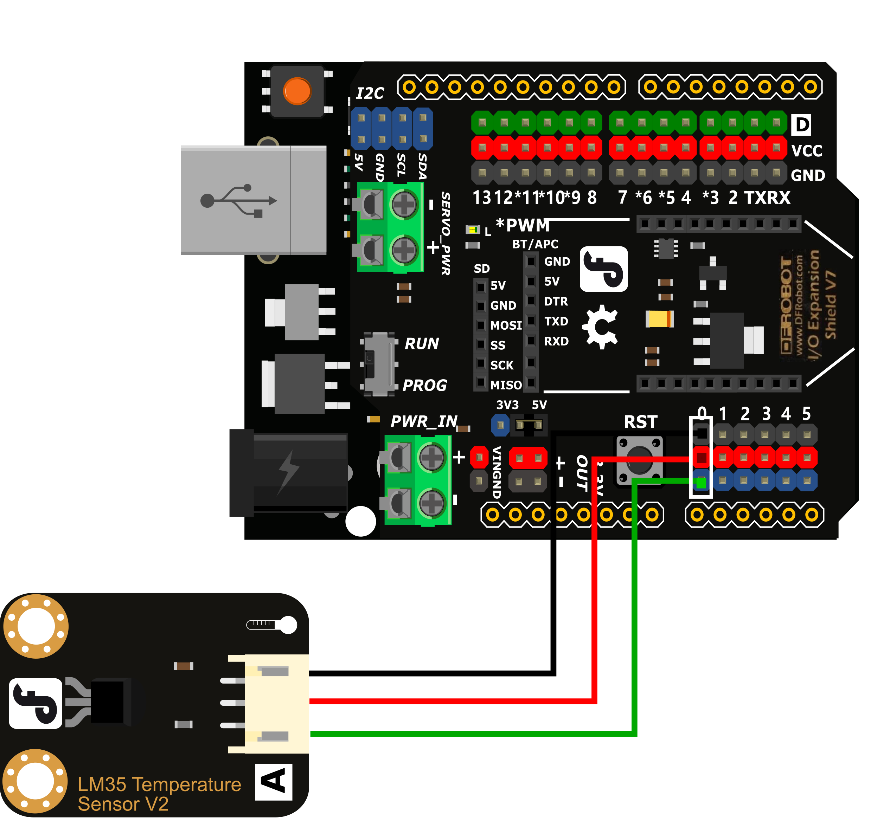
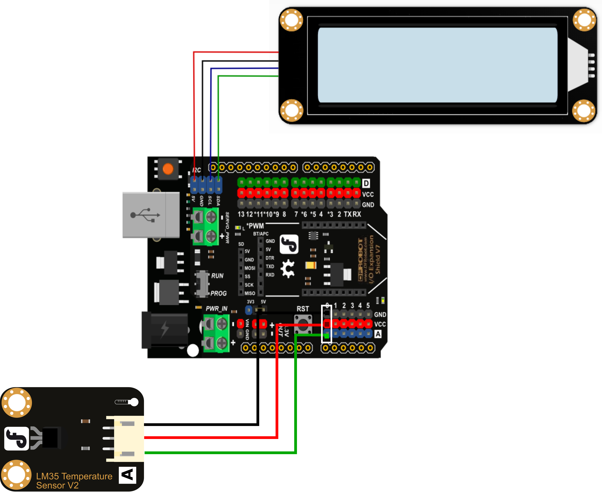
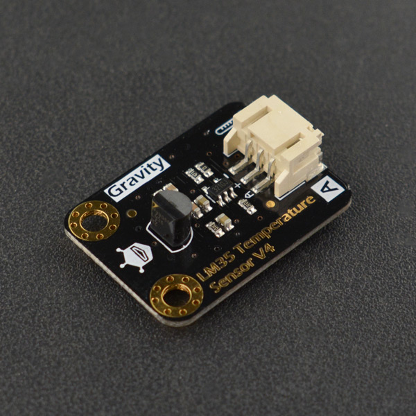

项目8 桌面气象站
一、概述
在日常生活中，你是否会关注自己身处环境的温度？自己身处的环境是否过热or过冷？什么时候需要开空调了？如果你有这些疑问，就请跟着我们来完成一个桌面气象站吧。
二、项目实施
（1）读取温度传感器数据
硬件准备：
主控：Arduino UNO、IO 传感器扩展板 V7.1
模块：LM35线性温度传感器
连接线：TypeAtoB方口USB连接线
将LM35线性温度传感器接入A0模拟接口
程序编写：
LM35温度传感器需要通过读取模拟值经过一定的换算得到温度数据，那么首先就需要读取对应引脚的模拟值，回顾之前案例，打开pingpong库的官方文档，找到基础库示例中的“模拟输入”，并用IDLE打开。
修改程序，添加转换公式：温度= 读取到模拟值 * (5/10.24);这样就能顺利读取温度数据了。
import time
from pinpong.board import Board,Pin
Board("uno").begin()
adc0 = Pin(Pin.A0, Pin.ANALOG)
while True:
v = adc0.read_analog()
tem = round(v*(5/10.24),2)
print("temperature:", tem)
time.sleep(0.5)
（2）让屏幕显示温度数据
在上个项目中我们使用了LCD显示屏，为了方便查看温度的实时数据，我们将数据在屏幕上显示出来。
硬件准备：
主控：Arduino UNO、IO 传感器扩展板 V7.1
模块：1602LCD显示屏、LM35线性温度传感器
连接线：TypeAtoB方口USB连接线
将1602LCD显示屏接入IIC接口
将LM35线性温度传感器接入A0模拟接口
程序编写
import time
from pinpong.board import Board,Pin
from pinpong.libs.lcd1602 import LCD1602_I2C
Board("uno").begin()#初始化，选择板型(uno、leonardo、xugu)和端口号，不输入端口号则进行自动识别
adc0 = Pin(Pin.A0, Pin.ANALOG) #初始化温度读取引脚在A0
lcd = LCD1602_I2C(i2c_addr=0x20)#初始化LCD的I2C地址
lcd.backlight(True) #打开背光
lcd.clear()#清屏
lcd.set_cursor(2,0)#设置光标位置
lcd.print('temperature')#显示“temperature”
while True:
v = adc0.read_analog()#读取模拟量的值
tem = round(v*(5/10.24),2)#将读到的数值转化为温度数据
lcd.set_cursor(5,1)
lcd.print(str(tem))
lcd.print('C')
time.sleep(1)
三、代码分析
导入必要库和模块，参考之前使用过的LCD屏所需的部分和adc部分。
import time
from pinpong.board import Board,Pin
from pinpong.libs.lcd1602 import LCD1602_I2C
然后对需要用到的功能进行初始化设置。
Board("uno").begin()#初始化，选择板型(uno、leonardo、xugu)和端口号，不输入端口号则进行自动识别
adc0 = Pin(Pin.A0, Pin.ANALOG) #初始化温度读取引脚在A0
lcd = LCD1602_I2C(i2c_addr=0x20)#初始化LCD的I2C地址
lcd.backlight(True) #打开背光
lcd.clear()#清屏
lcd.set_cursor(2,0)#设置光标位置
lcd.print('temperature')#显示“temperature”
让屏幕显示温度，每隔一秒钟刷新。
while True:
v = adc0.read_analog()#读取模拟量的值
tem = round(v*(5/10.24),2)#将读到的数值转化为温度数据
lcd.set_cursor(5,1)
lcd.print(str(tem))
lcd.print('C')
time.sleep(1)
round()的作用：
round()函数用来返回浮点数四舍五入后的值，例如round(35.543,2)返回的结果就是35.54，(35.543,2)中的2代表保留两位小数。
四、硬件分析
LM35线性温度传感器
基于LM35半导体的温度传感器，可以用来对环境温度进行定性的检测。LM35半导体温度传感器是美国国家半导体公司生产的线性温度传感器。其测温范围是-40℃到150℃，灵敏度为10mV/℃，输出电压与温度成正比。
